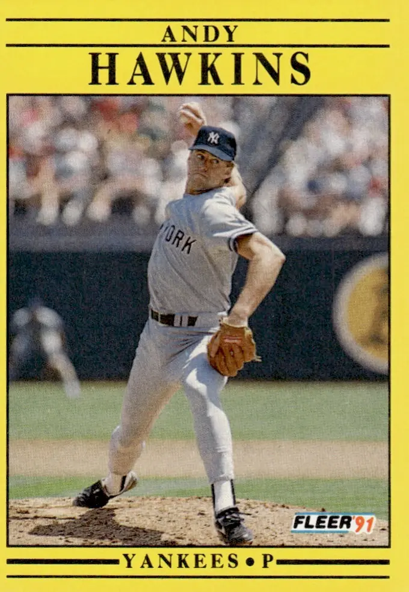

Andy Hawkins
Career Highlights & Facts
(Facts are AI-generated and may require verification)
- Achieved a rare feat by throwing a complete-game no-hitter while still losing the contest.
- Holds the distinction of being the final starting pitcher in major league history to record an appearance lasting into the 12th inning.
- Earned a victory in a World Series game by providing 6 innings of relief work.
Would you like to find out more about Andy Hawkins?
Player Biography
Andy Hawkins
February 9, 2017
/
in
BioProject - Person
No-Hitters
/
by
admin
This article was written by
Stew Thornley
Andy Hawkins is familiar with tough luck. He is best remembered for
pitching a 1990 no-hitter
— that he lost. He followed that five days later with 11 shutout innings before losing in the 12th. He also got no decision in his final start of the 1988 season despite 10 scoreless innings. The opposing pitcher who matched goose eggs with him was Orel Hershisher, who, by getting the chance to pitch an extra inning (made possible by Hawkins’s performance), passed Don Drysdale’s record of 58 consecutive scoreless innings.
Melton Andrew “Andy” Hawkins was born to Mel and Linda Hawkins in Waco, Texas, on January 21, 1960. Another son, Mike, rounded out the family five years later. In addition to being a banker and a rancher, Mel was involved in coaching from the time his older son started pitching in Little League when he was 8 until he made the high-school team six years later.
1
“Andy Hawkins needed to be pushed,” wrote Tom Friend in the
Los Angeles Times
in 1985. “Mel Hawkins learned that early, because Andy grew early. He was bigger than most kids, and so he tended to relax at the sports he played.”
2
The label of “Timid Texan” stuck with the 6-foot-3 right-hander even after he established himself in the major leagues. Dick Williams, his manager with the San Diego Padres, once said he “pitched like a pussycat.” The challenge angered Hawkins, but over time it appeared to be effective in the response it got.
3
Growing up, Hawkins also played basketball and football. In the latter sport, he was a punter, kicker, cornerback, and tight end at Midway High School in Waco. His strongest skill was punting, and he received a scholarship from Baylor University in Waco. Hawkins also knew he was likely to be a high draft pick in baseball.
In June of 1978 Hawkins was the second pitcher taken (one spot behind Mike Morgan) and the fifth player drafted overall, and he gave up his Baylor scholarship to sign with the San Diego Padres. Assigned to Walla Walla in the Northwest League, Hawkins pitched well, compiling an 8-3 won-lost record with a 2.12 earned-run average in 102 innings.
Promoted the next year to Reno in the California League, Hawkins didn’t do as well. “I have never struggled anything like that in my life,” he said. “I was seriously down, and I was considering going back to Waco to play football and giving up baseball.” Hawkins credited his manager, Eddie Watt, with helping him. “He talked me through it and kept me going. I made some changes. I give Eddie Watt a lot of credit. Eddie Watt is a good man.”
4
Watt was his manager again in 1981, with Amarillo in the Texas League, as Hawkins continued his progression to the big leagues. He moved up to Hawaii in the Pacific Coast League in 1982. At midseason he had an ERA of 2.17 in 132⅔ innings with the Islanders. Soon after pitching three straight shutouts and 30 consecutive scoreless innings,
5
Hawkins was called up by the Padres and displaced Juan Eichelberger in the starting rotation.
That fall, at the direction of the Padres, Hawkins pitched for Bayamon in the Puerto Rican League and hurled a no-hitter his first time out. Williams and San Diego general manager Jack McKeon came to the island to watch Hawkins — who upped his record to 3-0 while they were there — and other young players, including Tony Gwynn. “I loved it,” Hawkins said of pitching in Puerto Rico for manager Art Howe and with pitching coach Mike Cuellar.
6
A team on the rise, the Padres had an abundance of starting pitching, including Dave Dravecky, Ed Whitson, Eric Show, Tim Lollar, and Mark Thurmond. Hawkins started the 1983 season back in the Pacific Coast League, with Las Vegas, was sharp in his first two games, and was called up when Whitson hurt his knee. He continued his strong pitching, posting a 1.93 ERA in his first six games and getting his first shutout with a win over Steve Carlton in Philadelphia.
Hawkins ended up back in the minors during the season, but by 1984, he was up to stay although he battled to keep his spot among the starting pitchers. Hawkins said it was a “mix and match”
7
between him and the left-handed Dravecky for the fifth spot. The Padres won the National League West Division and went with four starters in the postseason, putting both Dravecky and Hawkins in the bullpen.
The relievers stood out in the National League best-of-five playoffs in helping the Padres come back from a two-game deficit. In the deciding game, the Chicago Cubs had a 3-0 lead over San Diego after five innings. Hawkins relieved Show in the second, and he, Dravecky, Craig Lefferts, and Rich “Goose” Gossage held the Cubs scoreless the rest of the way. San Diego came back to win the game, 6-3, and advance to the World Series against the Detroit Tigers.
The Tigers won the first game and quickly took a 3-0 lead in the next one. With two out in the top of the first, Hawkins relieved Whitson. Hawkins had pitched 2⅔ innings of one-hit relief in Game One and was ready to go again the next night. “I said [to pitching coach Harry Dunlop] I could go in Game 2,” Hawkins said. “I had nothing to rest up for.”
8
Hawkins pitched through the sixth and allowed only a bloop single to Kirk Gibson. While he was in the game, San Diego came back with runs in the first and fourth and then took the lead in the fifth on a three-run homer by Kurt Bevacqua. Craig Lefferts shut down the Tigers over the final three innings, and Hawkins was awarded the win.
At this point, through the final two games of the playoffs and the first two of the World Series, the bullpen had produced a string of more than 20 consecutive scoreless innings. “I never saw middle relief carry a team like this in postseason play,” said Dick Williams.
9
Detroit won the next three games to win the World Series. Hawkins pitched four innings in the final game, but the lone run he gave up put the Tigers ahead to stay, and he was charged with the loss. Nevertheless, he had an outstanding postseason, giving up only that run in more than 15 innings, and as of 2015 Hawkins remained the only pitcher to win a World Series game for the San Diego Padres.
Hawkins looked back on the “pussycat” comment from his manager earlier in the season. “The rap against me in the past, I guess, was that I was afraid to challenge hitters, that I wasn’t aggressive enough, that I’d pitch for the corners,” he said. “Well, I want to say that I wasn’t afraid to throw strikes earlier this year. It was just that I was so erratic I couldn’t throw strikes. Now, hopefully, that’s all behind me.”
10
Williams believed his challenge had the right effect on Hawkins. “Hawks is coming after the hitters now,” Williams said. “He’s a very nice person, a gentleman, but on the mound you’ve got to be a little mean now and then.”
11
Hawkins was back in the rotation in 1985, and he credited new pitching coach Galen Cisco for helping him develop a cut fastball. “It was a good pitch for me,” he said.
12
With the cutter in his arsenal of pitches, Hawkins won his first 10 starts of the season and his first 11 decisions before losing on June 19. He finished the year with an 18-8 won-lost record and career-best ERA of 3.15 (in seasons in which he pitched at least 162 innings, the number needed to qualify for a percentage title).
Hawkins dealt with injuries during his big season and beyond. He missed a start with a circulatory problem in the index finger of his right hand in July 1985. Two years later he spent time on the disabled list with tendinitis in his pitching shoulder. In 1988 he said in mid-August that his arm had been “dead for a month,” adding that there was “nothing medical about it” and that “it happens every year about this time.”
13
Hawkins’s final start of the 1988 season, which turned out to be his last with the Padres, came at home against the Dodgers on September 28. His mound counterpart was Orel Hershiser, who came into the game with 49 straight scoreless innings pitched, nine short of the major-league record held by Don Drysdale. With this also being Hershiser’s final start of the regular season, it appeared that even if he could keep the shutout streak going, he could only tie Drysdale by the end of the season.
However, Hawkins was equally as impressive that night, and a scoreless game through nine meant Hershiser was able to take the mound again, keep the Padres off the board for another inning, and pass Drysdale for the record. “He was just fantastic,” Hawkins said of Hershiser. “Everything he did he was right that year. We got to see it up close that night. He was dominant.”
14
Both starters were long gone when the Padres finally won the game, 2-1, in 16 innings.
Hawkins was a free agent after the 1988 season and, with San Diego pursuing Bruce Hurst, he didn’t think the Padres were interested in keeping him. He went with the best offer he received, a three-year deal from the New York Yankees worth a reported $3.6 million. (Hawkins’s salary with the Padres in 1988 had been $453,000).
15
Gossage, a former teammate on the Padres as well as a former Yankees pitcher, said he thought Hawkins could handle the atmosphere and pressure of New York. Hawkins also liked that the Yankees seemed on the verge of another winning season and needed pitching, so the thought of donning pinstripes was “appealing to me. … I thought, ‘I’ll go to New York, and I’ll get into three pennant races.’ It never happened.”
16
The Yankees dropped below .500 and finished in fifth place in 1989. Hawkins had 11 wins by mid-July after two straight shutouts, but he dropped seven of his last 11 decisions and finished with a record of 15-15. The next year he was on the verge of being released in June but kept his spot on the team only because right-hander Mike Witt got hurt.
On July 1, 1990, Hawkins took the mound against Greg Hibbard at Comiskey Park in Chicago. The pair matched hitless innings through five. Although the Yankees got a few hits after that, they could not break through on the scoreboard, and the game was scoreless into the last of the eighth. Hawkins retired the first two batters before Sammy Sosa hit a grounder that Mike Blowers couldn’t field cleanly at third. Immediately an “H” for hit appeared on the scoreboard. Hawkins thought his no-hitter was done. However, the scoreboard operator was premature, flashing the hit before official scorer Bob Rosenberg was able to make his decision, which was an error. Hawkins said, “So I went from, ‘Oh, it’s over’ to ‘I gotta get it back going again.’”
17
Hawkins walked two batters but appeared to be out of the inning when Robin Ventura lifted a fly to left. The swirling winds caused Jim Leyritz to circle the ball and then put out his glove, only to have the ball clank off it. Three runs scored as Ventura pulled into second on the error. Ivan Calderon then sent a fly to right. Jesse Barfield fought the sun and lost, the ball bouncing out of his glove for another error and another run. Hawkins finally got Dan Pasqua to pop out to end the inning.
When the Yankees were retired in the top of the ninth, ending the game, Hawkins had a no-hitter, but he lost the game, 4-0. “I’ve never seen anything so incredible,” said his manager, Stump Merrill. “You’re not going to see a better performance. We gave them six outs in the eighth inning. As far as I’m concerned, Andy pitched a nine-inning no-hitter.”
18
Hawkins followed that strange outing with another great performance, holding the Minnesota Twins scoreless through 11 innings, only to lose the game on a pair of two-out, run-scoring singles in the 12th. As of 2015 he is the last starting pitcher ever to pitch into the 12th inning in the majors.
Hawkins’s hopes for postseason runs with New York didn’t come through, and the Yankees’ expectations of Hawkins, who had received the richest contract for a starting pitcher in the team’s history,
19
also fell short. By the end of the 1990 season Hawkins and Dave LaPoint, another free-agent signing after 1988, were dropped from the rotation and replaced by a couple of September call-ups.
The Yankees released Hawkins early in the 1991 season. The Oakland Athletics picked him up in mid-May but released him three months later. In 1992 Hawkins pitched in the Seattle Mariners organization for Calgary in the Pacific Coast League. It marked the end of his playing career.
Hawkins returned to Texas and, in his words, did “odds and ends” over the next few years, including working as a construction foreman and ranch manager. When he decided to explore jobs in baseball, he started with the Texas Rangers, who were only about 100 miles from his ranch outside Waco.
20
He began as a pitching coach in the Rangers organization starting in 2001, working at various levels of the team’s farm system. He was with the Kansas City Royals organization in 2005 before returning to the Rangers and serving as pitching coach for their Oklahoma RedHawks team in the Pacific Coast League. In August 2008 Hawkins joined the Rangers as the interim pitching coach. The next year he became the bullpen coach for the Rangers and continued in that role as of 2015.
Hawkins and his first wife, Jackie (Taylor) had four children, Katy, Libby, Curtis, and Maggie. As of 2015 he lived with his wife, Jodi (McCabe), outside Phoenix in Surprise, Arizona, which is also where the Rangers have their spring training.
Last revised: February 2, 2017
This article was published in SABR’s
“No-Hitters”
(2017), edited by Bill Nowlin.
Notes
1
Author interview with Andy Hawkins, August 12, 2015.
2
Los Angeles Times,
May 30, 1985, https://articles.latimes.com/1985-05-30/sports/sp-5168_1_minor-leagues.
3
Steve Walker, “A Trip to the San Diego Bullpen Turns ‘Pussycat’ Padre Pitcher Andy Hawkins into a Tiger”
People,
July 8, 1985: 48.
4
Author interview with Andy Hawkins, August 12, 2015.
5
The Sporting News,
July 26, 1982: 41.
6
The Sporting News,
November 29, 1982: 67; Author interview with Andy Hawkins, August 12, 2015.
7
Author interview with Andy Hawkins, August 12, 2015.
8
“Dirty Kurt, Handy Andy Tame Tigers,”
The Sporting News,
October 22, 1984: 13.
9
Ibid.
10
Ibid.
11
Ibid.
12
Author interview with Andy Hawkins, August 12, 2015.
13
The Sporting News,
August 29, 1988: 21.
14
Author interview with Andy Hawkins, August 12, 2015.
15
The Sporting News,
December 19, 1988: 56.
16
Author interview with Andy Hawkins, August 12, 2015.
17
Author interview with Andy Hawkins, August 12, 2015.
18
“3 No-Hitters, Two Celebrations,”
The Sporting News,
July 9, 1990: 15.
19
The Sporting News,
January 2, 1989: 50.
20
Author interview with Andy Hawkins, August 12, 2015.
Full Name
Melton Andrew Hawkins
Born
January 21, 1960 at Waco, TX (USA)
Stats
Baseball Reference
Retrosheet
Tags
No-Hitters
Career Totals
| WAR | W | L | ERA | G | GS | SV | IP | SO | WHIP |
|---|---|---|---|---|---|---|---|---|---|
| 1.3 | 84 | 91 | 4.22 | 280 | 249 | 0 | 1558.1 | 706 | 1.403 |
Statistics via Baseball-Reference.com
The Original Clue